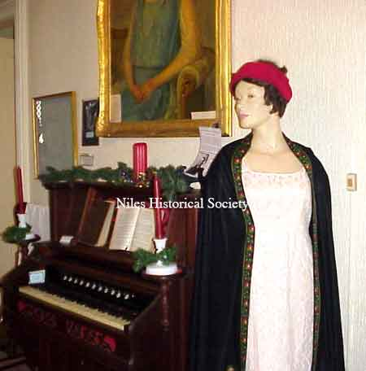

Ward-Thomas Museum


Ladies
of the White House:
Martha Jefferson Randolph
Ward — Thomas
Museum
Home of the Niles Historical Society
503 Brown Street Niles, Ohio 44446
Return to: Ladies of the Whitehouse
Click on any photograph to view a larger image.
News
Tours
Individual Membership: $20.00
Family Membership: $30.00
Patron Membership: $50.00
Business Membership: $100.00
Lifetime Membership: $500.00
Corporate Membership:
Call 330.544.2143
Do you love the history of Niles, Ohio and want to preserve that history and memories of events for future generations?
As a 501(c)3 non-profit organization, your donation is tax deductible. When you click on the Donate Button, you will be taken to a secure Website where your donation will entered and a receipt generated.
Martha
Jefferson Randolph Jefferson came to the White House a widower and it was not until he began his second term that his daughter, Martha Randolph, became the official hostess. She was well qualified, having accompanied her father during his diplomatic mission in France. But social entertainments were less formal, the traditional bowing was dispensed with to avoid similarity to a European court, and the handshake was introduced into custom. The seventh of her twelve children was the first baby born in the White House. Tall, slim Martha is shown in a black wool shawl.
This fashion first appeared in Europe in the nineteenth century
and became the rage in America. The shawl measures about eight
feet by four feet and has a wide paisley border. This is the only
apparel that was located of Mrs. Randolph’s. Perhaps most
of her gowns were destroyed in the Civil War.
|
||
| |
||
|  View of Gown |
View of Bodice |
|
| |
||
|
|
||
|
|
|

{kind=link}
{kind=link}